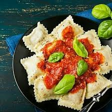

Ñoquis:
Ñoquis de papas,adobados en aseite de oliba y oregano.Salsa sugerida:Bolognesa $350
Ñoquis de papas,adobados en aseite de oliba y oregano.Salsa sugerida:Bolognesa $350
Rellenso de espinaca,cebolla saltada,ricota, queso parmesano y nuez.Salsa sugerida:Roja $400
Rellenos de jamon cosido,mix de queos (mozarella,parmesano y ricota fresca)Salsa sugerida:Crema $400